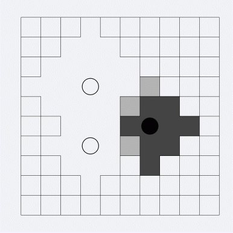

BZPRO
#1392. [Ceoi2008]Dominance
内存限制：64 MiB
时间限制：10 Sec
提交
提交记录
讨论
题目描述
给出一个宽为W,高为H的矩形 。 在它上面有两种点，black及white. 每个点都有自己的辐射范围。对于其它的点如果它受到白点的辐射多于黑色的，则为 白点，反之亦然，如果相同的话则中立. 现给出白点及黑色的坐标及各自的辐射范围，问最后白色点一共有多少个，黑色点共有多少个 。
输入格式
第一行给出W和H，左下角坐标为(0,0), 右上角为(W-1,H-1). 1 ≤ W,H ≤1 000 000 000 第二行给出数字N，代表有多少个点。0 ≤ N ≤ 3 000 接下来N行，每行先给出点的属性，再给出坐标，再给出辐射范围，其在[0, 500 000 000)
输出格式
两个数，分别代表白色点有多少个，黑色点有多少个 。
样例
样例输入
10 10
3
W 3 6 3
B 6 4 2
W 3 3 2
样例输出
30 9
数据范围与提示
